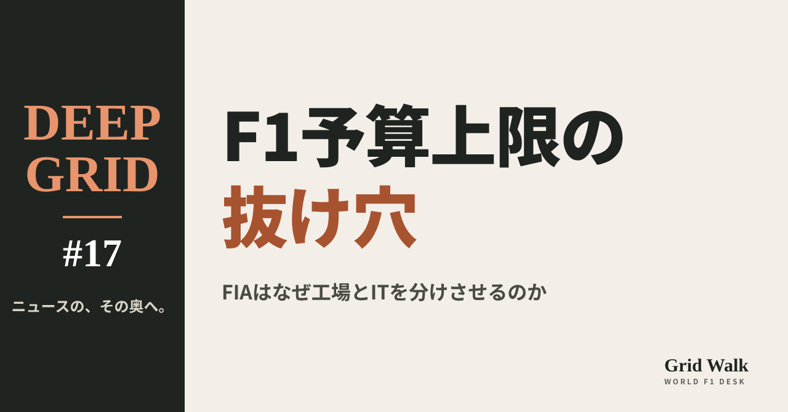

<meta charset="utf-8"><title>予算上限の抜け穴 note貼り付け</title>
<style>
/* one column of numbered paste steps; text steps vs image steps differ by marker */
:root{--bg:#F5F4F0;--card:#FFFFFF;--ink:#1D2321;--mute:#5F665F;--line:#DCDAD2;--btn:#1F5FBF;--btnok:#2E8B4F;--img:#E9F3EC;--imgink:#22663B;--sans:'IBM Plex Sans JP','Hiragino Sans','Noto Sans JP',sans-serif}
@media (prefers-color-scheme:dark){:root:not([data-theme="light"]){--bg:#171A19;--card:#202423;--ink:#ECEDE8;--mute:#A3AAA2;--line:#343937;--btn:#4D8BE6;--btnok:#3FA866;--img:#1E2C23;--imgink:#8FD3A6;color-scheme:dark}}
:root[data-theme="dark"]{--bg:#171A19;--card:#202423;--ink:#ECEDE8;--mute:#A3AAA2;--line:#343937;--btn:#4D8BE6;--btnok:#3FA866;--img:#1E2C23;--imgink:#8FD3A6;color-scheme:dark}
body{background:var(--bg);color:var(--ink);font-family:var(--sans);font-size:15px;line-height:1.75;padding:20px 16px 60px}
main{max-width:680px;margin:0 auto;display:grid;gap:28px}
header h1{font-size:22px;margin:0 0 6px;text-wrap:balance}
header p{margin:0;color:var(--mute);font-size:14px}
nav{display:flex;gap:8px;flex-wrap:wrap;margin-top:12px}
nav a{border:1px solid var(--line);border-radius:999px;padding:4px 14px;color:var(--ink);text-decoration:none;font-size:14px;background:var(--card)}
.part h2{font-size:18px;line-height:1.5;margin:0 0 12px;text-wrap:balance;display:flex;gap:10px;align-items:baseline;flex-wrap:wrap}
.tag{font-size:13px;background:var(--ink);color:var(--bg);border-radius:6px;padding:1px 9px}
.steps{list-style:none;margin:0;padding:0;display:grid;gap:12px}
.st{background:var(--card);border:1px solid var(--line);border-radius:12px;padding:12px;min-width:0}
.hd{display:flex;align-items:center;gap:8px;margin-bottom:8px}
.no{width:26px;height:26px;border-radius:50%;background:var(--btn);color:#fff;display:inline-flex;align-items:center;justify-content:center;font-size:13px;font-weight:700;flex:0 0 26px}
.im .no{background:var(--btnok)}
.hd em{font-style:normal;font-size:12px;background:var(--img);color:var(--imgink);border-radius:6px;padding:0 8px}
.bx{font-size:13.5px;line-height:1.7;border:1px solid var(--line);border-radius:8px;padding:8px 10px;max-height:110px;overflow:auto;overflow-wrap:anywhere}
.bx.tall{max-height:150px}.bx p{margin:0 0 6px}.bx h2{font-size:14px;margin:8px 0 4px}.bx a{color:var(--btn)}
.st img{display:block;width:100%;max-width:100%;border:1px solid var(--line);border-radius:8px}
.sub{font-size:12.5px;color:var(--mute);margin:6px 0 0}
.cp{width:100%;margin-top:8px;padding:12px;border:0;border-radius:10px;background:var(--btn);color:#fff;font:600 15px var(--sans);cursor:pointer}
.cp.ok{background:var(--btnok)}.cp.dl{background:var(--btnok)}.cp:focus-visible{outline:3px solid var(--ink);outline-offset:2px}
.xh{font-size:15px;margin:20px 0 10px}
.fb{font-size:13px;line-height:1.7;margin:8px 0 0;padding:8px 10px;border-radius:8px;background:var(--img);color:var(--imgink)}
.opts{display:grid;grid-template-columns:repeat(auto-fill,minmax(240px,1fr));gap:10px}
.opt{min-width:0}.opt img{display:block;width:100%;border:1px solid var(--line);border-radius:8px}
.ol{display:flex;align-items:center;gap:8px;margin-top:6px}.ol b{font-size:13px;flex:0 0 auto}.ol .on{font-size:12.5px;color:var(--mute);flex:1;min-width:0}.ol .cp{width:auto;flex:0 0 auto;padding:9px 14px}.ol .cp{margin:0;padding:9px}
.toast{font-size:13px;color:var(--mute);margin-top:6px}
</style>
<main><header><h1>予算上限の抜け穴 note貼り付け</h1><p>上から順に進めてください。青い番号は文章、緑の番号は画像です。</p></header><section class="part"><h2><span class="tag">DEEP GRID</span>F1の予算上限の「抜け穴」とは何か</h2><ol class="steps"><li class="st im"><div class="hd"><span class="no">1</span><b>見出し画像</b><em>画像</em></div><div class="opts"><div class="opt"><div class="ol"><b>C1</b><span class="on">紙の色「抜け穴」（サイトのカード画像と同じ）</span><button class="cp dl" data-img="img/eye-C1.png" data-name="予算上限の抜け穴_見出し画像_C1.png">ダウンロード</button></div></div></div></li>
<li class="st"><div class="hd"><span class="no">2</span><b>タイトル</b></div><div class="bx" id="t0">F1の予算上限の「抜け穴」とは何か　FIAはなぜ工場とITを分けさせるのか【DEEP GRID #17】</div><button class="cp" data-plain="t0">タイトルをコピー</button></li>
<li class="st"><div class="hd"><span class="no">3</span><b>本文</b></div><div class="bx tall" id="r0"><p>F1チームが1年に使えるお金には上限がある。ところが、同じグループの別の部門で働く人や、共用の風洞・シミュレーターを通じて、上限の外からF1を速くできるのではないか、という疑いが何年も消えなかった。FIAは2027年から、F1の人と設備とITを、ほかの部門からはっきり切り離す。予算上限の仕組み、ふさがれる「抜け穴」、ホーナーの「5億か6億ドル」、そして2021年のレッドブルの前例から、この新しい決まりを読む。</p><p>全文と表は F1 Grid Walk で → <a href="https://f1gridwalk.github.io/deep/cost-cap-loophole/?utm_source=note&amp;utm_campaign=cost-cap-loophole">https://f1gridwalk.github.io/deep/cost-cap-loophole/?utm_source=note&amp;utm_campaign=cost-cap-loophole</a></p><h2>先に結論</h2><p>① F1チームが1年に使えるお金には、FIAが上限をつけている。2026年の上限は2億1500万ドル（FIAの財務規則）。ただし、ドライバーへの支払い、報酬が高い上位3人、マーケティング、レースの移動費などは数えない。F1以外の活動にかかる費用も、上限の外だ。</p><p>② 「抜け穴」と疑われてきたのは、チームのグループにある「F1以外」の技術部門だ。英The Raceによると、レッドブルやメルセデス、アストンマーティンには、ヨットや自転車などF1以外の技術を手がける部門がある。そこで上限の外から給料を払う人が、F1の車づくりにも知恵を貸しているのではないか、という疑いだ。ただし、それが証明されたことは一度もない。</p><p>③ 世界モータースポーツ評議会（WMSC）は10月19日、2027年の新しい決まりを承認した。F1の人とF1以外の人は、別々の区画で働く。風洞やシミュレーターは共用できても、同時には使えない。ITも分け、情報はF1の外へ出ることはあっても、F1の中へは入れない。F1以外からF1に移る人には3か月の空白期間が、移ったあとは12か月の専念が求められる。</p><p>④ 元レッドブル代表のクリスチャン・ホーナーは、上限は2億ドルを少し超える程度なのに「チームは5億か6億ドルを使っている」と話し、もっと多くの項目を上限に入れるべきだと訴えた（独Motorsport-Total.com）。一方で、予算上限がチームを赤字から抜け出させ、効率を生んだとも話している。</p><p>⑤ 新しい決まりには、反発もあった。The Raceによると、いくつかのチームは厳しすぎると抵抗したが、FIAは押し切った。働き方を変えなければならないチームもあるという。予算上限には前例もある。2021年のレッドブルは上限を1.6％超え、罰金700万ドルと空力テストの10％削減を受けた。</p><p><strong>あなたは、F1とほかの部門を分ける新しい決まりで、予算上限の「抜け穴」はふさがると思いますか？</strong></p><h2>続きは F1 Grid Walk で</h2><p>ここから先の「予算上限は、何を数えているのか」「「抜け穴」は、どこにあったのか」「2027年からの新しい「壁」」「前例：2021年のレッドブル」「上限は効いているのか、足りないのか」は、サイトで読めます。予算上限の額の移り変わり、上限に数えない費用、2027年の分離の決まり、違反と罰、年表などの表も載せています。</p><p><strong>DEEP GRID #17「F1の予算上限の「抜け穴」とは何か　FIAはなぜ工場とITを分けさせるのか」</strong></p><p><a href="https://f1gridwalk.github.io/deep/cost-cap-loophole/">https://f1gridwalk.github.io/deep/cost-cap-loophole/</a></p><p>━━━━━━━━━━</p><p><strong>F1 Grid Walk では、世界のF1ニュースを毎日日本語でまとめています。</strong></p><p>海外の記事の要約を、毎日載せています。</p><p>ほかの海外記事も読みたい方は、F1 Grid Walkへ。</p><p><a href="https://f1gridwalk.github.io/">https://f1gridwalk.github.io/</a></p><p>━━━━━━━━━━</p><p><a href="https://www.fia.com/system/files/documents/fia_2027_f1_regulations_-_section_f_operational_-_iss_01_-_2026-10-19.pdf">出典：FIA</a></p><p><a href="https://www.fia.com/system/files/documents/fia_2026_f1_regulations_-_section_d_financial_-_f1_teams_-_iss_08_-_2026-10-01.pdf">出典：FIA</a></p><p><a href="https://www.the-race.com/formula-1/fia-imposes-draconian-new-rules-on-f1-teams-to-stop-cost-cap-exploitation/">出典：The Race</a></p><p><a href="https://www.gpblog.com/en/news/fia-introduces-strict-rules-to-prevent-tricks-with-the-budget-cap-regulations">出典：GPblog</a></p><p><a href="https://grandepremio.com/en/f1/fia-closes-f1-cost-cap-loopholes-with-strict-new-factory-and-staff-rules-for-2027/">出典：Grande Prêmio</a></p><p><a href="https://www.motorsport-total.com/formel-1/news/horner-fordert-umdenken-teams-geben-500-oder-600-millionen-dollar-aus-26101909">出典：Motorsport-Total.com</a></p><p><a href="https://www.motorsportweek.com/2026/10/18/toto-wolff-f1-cost-cap/">出典：Motorsport Week</a></p><p><a href="https://www.planetf1.com/news/mercedes-and-red-bull-operations-revealed-as-fia-clamp-down-on-cost-cap-loophole">出典：PlanetF1</a></p><p><a href="https://api.fia.com/sites/default/files/rbr_public_summary_aba_-_article_6.32_1.pdf">出典：FIA</a></p><p><a href="https://racingnews365.com/red-bulls-budget-cap-breach-the-full-timeline">出典：RacingNews365</a></p><p><a href="https://www.formula1.com/en/latest/article/wolff-satisfied-with-rigourous-cost-cap-process-as-shovlin-calls-horners.7b2VoA9Ev2ghKwGezw96Kr">出典：F1公式サイト</a></p><p><a href="https://www.grandprix247.com/2022/10/18/brown-dear-fia-f1-cost-cap-breach-constitutes-cheating/">出典：GrandPrix247</a></p><p><a href="https://www.crash.net/f1/news/1014425/1/f1-cost-cap-how-red-bull-broke-it-their-punishment-and-2025-budget">出典：Crash.net</a></p><p><a href="https://api.fia.com/news/future-regulations-across-multiple-categories-confirmed-during-world-motor-sport-council">出典：FIA</a></p></div><button class="cp" data-rich="r0">本文をコピー</button></li>
<li class="st"><div class="hd"><span class="no">4</span><b>ハッシュタグ</b></div><div class="bx" id="g">#F1 #F1jp #DEEPGRID #予算上限 #コストキャップ #F1の規則 #F1解説 #フォーミュラ1 #モータースポーツ #F1ニュース #海外F1 #F1好きと繋がりたい #F1GridWalk</div><button class="cp" data-plain="g">ハッシュタグをコピー</button></li>
</ol><h3 class="xh">X に投稿（note を公開したあと）</h3><ol class="steps"><li class="st"><div class="hd"><b>① note からシェアするときに添える文</b></div><div class="bx" id="x0">F1の予算上限は2026年で2億1500万ドル。それでも「抜け穴」と疑われてきたのはなぜか。FIAが2027年からF1とほかの部門の人・設備・ITを分けさせる新ルールを、noteにまとめました #F1jp #DEEPGRID</div><button class="cp" data-plain="x0">コピー</button></li>
<li class="st"><div class="hd"><b>② ①への返信</b></div><div class="bx" id="x1">ほかの海外記事も読みたい方は、F1 Grid Walkへ。
https://f1gridwalk.github.io/deep/cost-cap-loophole/?utm_source=x&amp;utm_campaign=cost-cap-loophole</div><button class="cp" data-plain="x1">コピー</button></li>
<li class="st"><div class="hd"><b>③ ②への返信</b></div><div class="bx" id="x2">毎日の海外F1ニュースは、日本語でこちらにまとめています。
https://f1gridwalk.github.io/</div><button class="cp" data-plain="x2">コピー</button></li>
</ol></section></main><script>
function done(b,msg){const t=b.dataset.t||b.textContent;b.dataset.t=t;b.classList.add('ok');b.textContent=msg||'コピーしました';setTimeout(()=>{b.classList.remove('ok');b.textContent=t},2000)}
function selectEl(el){const r=document.createRange();r.selectNodeContents(el);const s=getSelection();s.removeAllRanges();s.addRange(r)}
async function rich(el,b){
  try{await navigator.clipboard.write([new ClipboardItem({'text/html':new Blob([el.innerHTML],{type:'text/html'}),'text/plain':new Blob([el.innerText],{type:'text/plain'})})]);done(b);return}catch(e){}
  selectEl(el);let ok=false;try{ok=document.execCommand('copy')}catch(e){}
  if(ok){getSelection().removeAllRanges();done(b)}else{done(b,'選択しました。コピーしてください')}}
async function plain(el,b){
  try{await navigator.clipboard.writeText(el.innerText);done(b);return}catch(e){}
  selectEl(el);let ok=false;try{ok=document.execCommand('copy')}catch(e){}
  if(ok){getSelection().removeAllRanges();done(b)}else{done(b,'選択しました。コピーしてください')}}
let dlns=null;(async()=>{try{dlns=await window.claude?.use?.("downloads")}catch(e){dlns=null}})();
async function img(src,b){
  b.dataset.t=b.dataset.t||b.textContent;
  if(!dlns){try{dlns=await window.claude?.use?.("downloads")}catch(e){}}
  if(!dlns){b.textContent='ダウンロードできませんでした';setTimeout(()=>{b.textContent=b.dataset.t},3500);return}
  try{const blob=await fetch(src).then(r=>r.blob());b.textContent='保存の確認を開いています…';
    await dlns.save({filename:b.dataset.name,data:blob});done(b,'ダウンロードしました')}
  catch(e){const c=e&&e.code;b.textContent=c==='declined'?'キャンセルしました':c==='rate_limited'?'少し待ってからもう一度押してください':'ダウンロードできませんでした';setTimeout(()=>{b.textContent=b.dataset.t},3500)}}
document.querySelectorAll('.cp').forEach(b=>b.addEventListener('click',()=>{
  if(b.dataset.rich)rich(document.getElementById(b.dataset.rich),b);
  else if(b.dataset.plain)plain(document.getElementById(b.dataset.plain),b);
  else img(b.dataset.img,b)}));
</script>